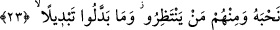

vâdettiği! Allah ve Rasûlü doğru söylemiştir” yâni Allah ve Rasûlü’nün haberinin
doğruluğu ortaya çıkmıştır “dediler. Bu (orduların gelişi),” mü’minlerin düşman
ordularını görmeleri “onların ancak” Allâh’a ve O’nun vaad ettiği şeylere “îmanlarını
ve Allâh’a” O’nun emirlerine ve takdir ettiği şeylere “bağlılıklarını arttırdı.”
Kâşifî şöyle demiştir: “İki cihân saâdeti olan Hz. Peygamber’in emrine itâat, bu
teslîmiyetin içindedir.”
Her kim onun fermânına kalem gibi baş koyup itâat ederse,
Onun adına şeref tuğrasının şansını yazmış olur.
23. Mü’minler içinde Allâh’a verdikleri sözde duran nice erler var. İşte onlardan
kimi, sözünü yerine getirip o yolda canını vermiştir; kimi de (şehitliği)
beklemektedir. Onlar hiçbir şekilde (sözlerini) değiştirmemişlerdir.
İhlâslı, samîmî “Mü’minler içinde Allâh’a” Rasûlü (s.a.) ile beraber sebât etme ve
dîni yüceltmek için savaşma konusunda “verdikleri sözde duran nice erler var.” Yâni
onlar açıktan yaptıkları fiilleriyle sözlerini gerçekleştirmiş ve yerine getirmişlerdir.
Bunlar Osman b. Affân, Talha b. Abdullah, Saîd b. Zeyd b. Amr b. Nufeyl, Hamza,
Mus‘ab b. Umeyr, Enes b. Nadr ve diğerleridir. Allah onlardan râzı olsun. Onlar
Rasûlullah (s.a.) ile bir savaşa katıldıklarında sebat edip şehîd oluncaya kadar
savaşacaklarına dâir nezir ve adakta bulunmuşlardı.
Hakîm Tirmizî şöyle der: Allah canlılar arasında insanı özel kıldı. Sonra insanlar
arasında mü’minleri özel kıldı. Sonra mü’minler arasında erleri tahsis etti ve şöyle
buyurdu: “Mü’minler içinde Allâh’a verdikleri sözde duran nice erler var.” Şu halde
erliğin hakîkati sıdk ve doğruluktur. Sıdk meydanlarına girmeyen erlik sınırının dışında
kalmıştır.”
Bilesin ki nezir/adak meşru bir ibâdet ve Allâh’a yakınlıktır. Âlimler adanan şey
günah değilse adağın yerine getirilmesinin gerekli olduğu üzerinde ittifak etmişlerdir.
Peygamberimiz (s.a.)’in: “Adakta bulunmayın, çünkü adak kaderi değiştirmez.”[192]
hadîsi ise ancak yasaklanan kendisiyle bir maksadın elde edilmesi kasdedilmeyen ve
adağın kaderi az da olsa geri çevireceği zannıyla istenmeyen bir şeyi savuşturmak için
olan adağa delâlet eder. Yoksa mutlak adak yasaklanmamıştır. Eğer öyle olsaydı adağı
yerine getirmek gerekli olmazdı. Yukarıda geçen hadîsin sonu şöyledir: “Ancak adak
yoluyla cimriden mal çıkarılmış olur.” Bu da adağın gerekli olduğuna işâret
etmektedir. Çünkü cimri olmayan zâten adak vesîlesi olmadan da kendi isteğiyle verir.
Cimri ise ancak kendisine vermeyi gerekli kılan adak vesîlesiyle verir. Bir kimse için
adak yapmak veya yapmamak eşit ise ve azmettiği bir şeyin gerçekleşmesi için ve